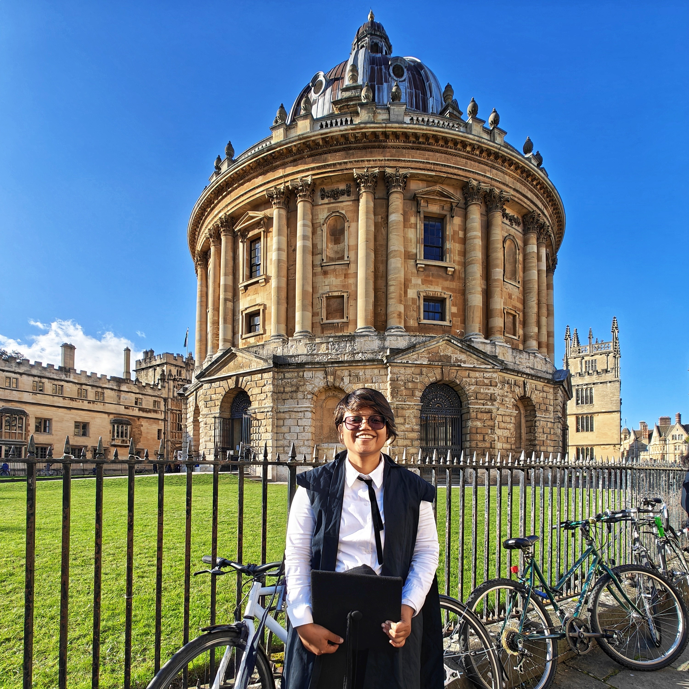

|
Agrima Deedwania
I am working as a Biotech Junior Research Scientist at a MedTech startup Inito, working to make home diagnostic testing kits.
Prior to that, I graduated with a Bachelors in Biochemical Engineering and Biotechnology from IIT Delhi in May 2022.
My research interests lie in synthetic biology and molecular engineering in the field of healthcare and sustainability with a combination of computational and wet lab work. At IITD, I was fortunate enough to collaborate closely with
Prof. Preeti Srivastava on protein engineering.
In my free time, I like to travel, play badminton and listen to Indie music.
Email /
CV /
Research /
Twitter /
Github /
LinkedIn
|

|
|
Research
While pursuing bachelors, I got interested in synthetic biology. At my current position at Inito,
I am working on developing home testing kits for whole blood assay for various hormones.
This involves identifying the problems existing in whole blood assays and also attempting to solve them.
I am also using synthetic biology approaches like protein engineering to develop synthetic antibodies for
our tests that will give better performance and results.
Over the past few years I have built my skills in protein engineering, structure prediction and docking,
designing biomolecular systems, CRN modeling and simulation and various molecular biology techniques.
The details of my completed research work are mentioned on the research page.
With my interest in synthetic biology, I aim to make biomolecular systems that would potentially be used in real-world
applications such as healthcare and sustainability.
|
|
News
November 2022: Graduated with a Bachelors (B.Tech) in Biochemical Engineering and Biotechnology from IIT Delhi.
October 2022: Won gold medal at iGEM 2022 competition. Advisor and mentor to the iGEM IIT Delhi team.
June 2022: Joined Inito, a MedTech healthcare startup as a Biotech Junior Research Scientist.
July 2021: Revived the synthetic biology IIT Delhi club. Appointed as the Overall student coordinator of the student team for the year 2021-22.
March 2021: Joined Prof. Preeti Srivastava's lab as undergraduate researcher to work on B.Tech Thesis Project.
May 2020: Joined Prof. Richard Murray's lab as Summer Undergraduate Research Scholar at Caltech.
October 2019: Presented the poster on the work on RNA thermometers in IRD 1234 Discover and learn conference.
August 2019: Joined Prof. Shaunak Sen's lab as an undergraduate researcher for RNA thermometers project, granted the IRD 1234 Discover and learn award.
June 2018: Joined IIT Delhi as an engineering undergrad, majoring in Biochemical Engineering and Biotechnology.
|
|
{kind=link}